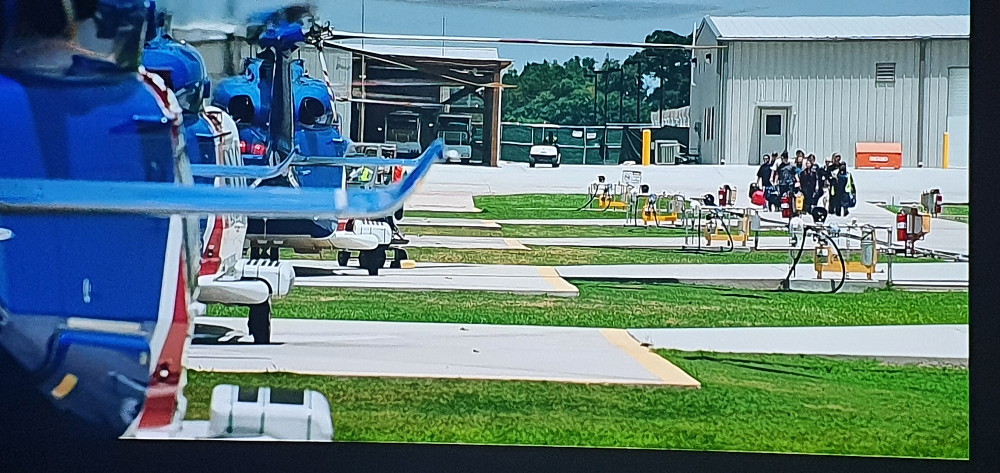

Questo è l'orizzonte definito dalla vision, ossia la direttrice sulla quale l'azienda si vede proiettata nel futuro.
In particolare: il concetto di tradizione è riferito sia alla leva innovativa che da sempre ha contraddistinto le nostre opere (realizzando strutture tecnologiche al passo con i tempi) sia agli aspetti tradizionalmente legati alla progettazione e all'esecuzione "in cantiere" che conferisce all'azienda esperienza e competenza.
Il concetto di innovazione, interpretato nel senso più ampio del termine, è determinato anche dalla qualità; dunque costruire e creare valore di qualità:
È su questa costante tensione imprenditoriale volta alla realizzazione di impianti tecnologici e strutture con modalità innovativa (progettazione, tecniche costruttive, materiali, impianti e servizi) che il Gruppo incarna e sviluppa nel tempo la propria identità umana e professionale.
Le linee guida consistono nel rispettare aspetti quali: sicurezza, ambiente, comfort, protezione, qualità dei materiali, risparmio energetico, soluzioni eco-sostenibili e tecnologie innovative.
Per attuare la vision, lo spirito aziendale persegue col fine di focalizzare il Core Business:
La garanzia per ottenere una qualità superiore viene perseguita attraverso i seguenti valori etici inderogabili:
Sfruttare know-how e capacità per intraprendere nuove opere.
Aggiornamento continuo dei processi progettuali ed esecutivi.
Flessibilità gestionale, volontà di crescita e nuovi strumenti.
Immobili di pregio che coniughino sicurezza e design.
Consulenza mirata ad individuare le particolari esigenze.
Competenze versatili per soddisfare ogni tipo di richiesta.
Stretto rapporto di collaborazione con progettisti e committenza.
Chiarezza degli studi di fattibilità e dei preventivi.